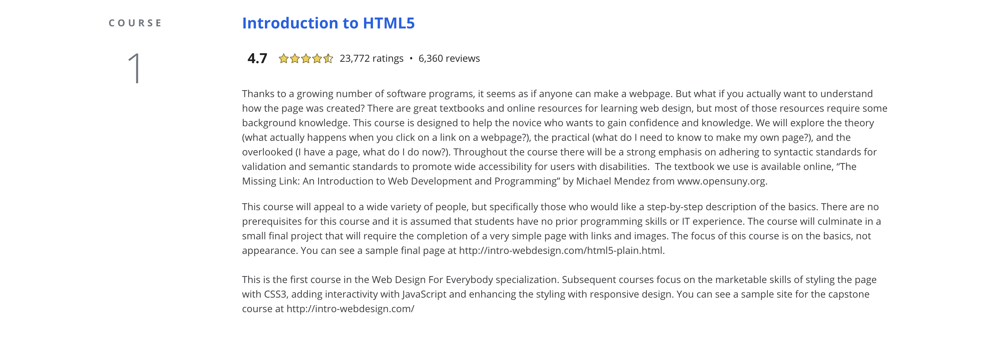

HTML ( HyperText Markup Language )，是一種標示語言，吿訴瀏覽器網頁。使用HTML可以編輯網頁，也可在其中加入圖片、影片、表格、連結等，讓瀏覽器知道網站整個架構的呈現。
因為有些project需要請不同地區上這一系列課的同學評分，因此成績送出與證書的時間會比較晚
使用coursera網站上課的原因是因為上面有多所大學提供的課程，而且之前就在平台上上過一樣式Universiry of Michigan的教授的課，覺得上面的課程內容很符合我現在的程度，難度適中，教授也講得很詳細。
我上的課程為“Web design for everybody 系列中的 一、二、三組課程，分別介紹HTML, CSS, Javascript 的介紹，完全符合我需要學的而選這系列課。
我用的程式編輯軟體為Sublime Text，會用這個軟體的主要原因為上線上刻的老師建議的，下載之後也發現這個軟體好用之處：其中我覺得最好用的功能之一為這個軟體在選定程式語言後會自動幫不同性質的程式碼變色，可以讓我清楚分辨我有沒有少打end tag 或是link格式有沒有錯等，也讓整個程式版面變整齊，清楚表示我現在打的是tag還是一般文字。
課堂進行到最後的時候，老師以一個Final Project應用前面課程介紹過的幾個Tags，做一個簡單的網站，初步測試自己寫出的HTML Code有沒有問題。
我做出來的Final project
我寫網站的程式碼
HTML 的課為我接觸寫網站的第一系列課，剛開始很不了解這個語言的文法規則，我也體會到抄筆記的重要性，老師上課的時候會提到的事情很多元也很多樣，剛開始並沒有抄筆記，過一個禮拜就忘了很多，後來抄了筆記不斷可以在上課前複習前一個禮拜交的課，也可以在要用這個功能的時候把筆記拿出來看，節省很多修改錯誤的時間。第一次做報告的時候是第一次寫HTML網站，才開始見識到寫網站的效果，雖然還未美編但已經對目前自己可以做到的成果很滿意，只是在寫的時候比想像中花多一點時間，很多tag的使用方式都很不熟悉，我想我可能要多練習，在老師上課的時候不應只是聽，應該要邊聽邊開一個檔案練習，這樣不只可以看到自己有哪裡是沒有很懂無法馬上實作出來，也許頻繁的實作還可以幫自己在剛開始就挑出思考錯誤的點。
